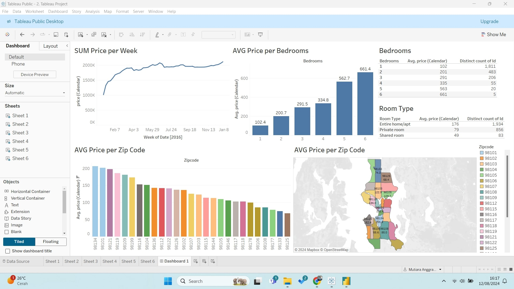

I developed a comprehensive Data Professional Survey Dashboard using Power BI, aimed at visualizing and analyzing survey data from professionals in the data field. The dashboard provides key insights into the demographics, skills, tools, and career aspirations of data professionals, offering a detailed understanding of trends and patterns within the industry.

I created an Airbnb Data Dashboard using Tableau, designed to provide deep insights into Airbnb listings and trends. The dashboard is tailored for hosts, potential investors, and market analysts to understand the dynamics of the Airbnb market, including pricing, occupancy rates, and geographic distribution of properties.
I developed a Bike Sales Data Dashboard using Excel, aimed at providing a clear and concise overview of bike sales performance across various regions and time periods. This dashboard is designed to help sales teams, managers, and analysts quickly assess sales trends, identify top-performing products, and make informed decisions to drive business growth.
I developed a Sales Data Dashboard using Looker Studio, aimed at providing a clear and concise overview of sales performance across various regions and time periods. This dashboard is designed to help sales teams, managers, and analysts quickly assess sales trends, and make informed decisions to drive business growth.
Develop a comprehensive dashboard in Looker Studio to monitor and evaluate monthly sales achievements. The dashboard is designed to provide insights into marketing campaign performance and detailed product metrics, enabling the marketing team to make informed decisions.